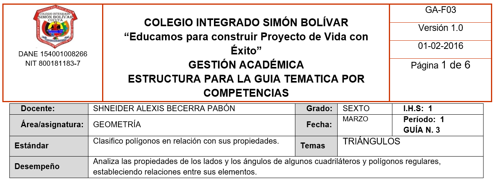

6°

Clasificación de triángulos según lados y ángulos
EXPLORACIÓN
Observa con atención
En la clase anterior trabajamos polígonos.
Hoy nos concentraremos en uno muy especial.
Observa las siguientes figuras:
![imagen educativa en fondo blanco con tres triángulos alineados horizontalmente. Condiciones matemáticas estrictas: Triángulo 1: Tres lados exactamente iguales. Triángulo equilátero. Convexo. Base horizontal. Triángulo 2: Dos lados exactamente iguales. Un lado diferente. Triángulo isósceles. Base horizontal. No debe ser equilátero. Triángulo 3: Tres lados claramente diferentes. Triángulo escaleno. Convexo. Sin simetría evidente. Reglas obligatorias: No incluir nombres (ni equilátero, isósceles, escaleno). No incluir medidas numéricas. No incluir ángulos marcados. No incluir texto explicativo. Líneas negras uniformes. Sin sombreado. Sin fondo cuadriculado. Diseño minimalista. Proporción 16:9. Alta claridad visual.](content/resources/20260217080416621YBB/2-2-1.png "Crear una imagen educativa en fondo blanco con tres triángulos alineados horizontalmente.")
Responde en tu cuaderno:
📝 En tu cuaderno escribe:
Exploración – Triángulos
- ★ ¿Qué tienen en común todas las figuras observadas?
- ★ ¿Cuántos lados tiene cada una?
- ¿Notas diferencias en la longitud de sus lados?
- ¿Notas diferencias en la abertura de sus ángulos?
- ¿Alguna figura parece “más inclinada” o “más abierta” que otra? Explica.
Dibuja y compara
Paso 1: Dibuja un triángulo con todos sus lados iguales.
Paso 2: Dibuja un triángulo con dos lados iguales.
Paso 3: Dibuja un triángulo con los tres lados diferentes.
Responde:
6. ★ ¿En qué se diferencian tus dibujos?
7. ¿Cómo podrías organizar estos triángulos en grupos?
No escribas aún nombres formales.
ANALIZA
Observa nuevamente tus dibujos.
📝 En tu cuaderno escribe:
Analiza
- ★ ¿Qué ocurre cuando los tres lados tienen la misma longitud?
- ★ ¿Qué ocurre cuando solo dos lados son iguales?
- ¿Qué ocurre cuando los tres lados son diferentes?
- ¿Crees que la medida de los ángulos cambia cuando cambian los lados? Explica.
Comparación por ángulos
Ahora observa los siguientes triángulos:
![imagen educativa con tres triángulos alineados horizontalmente. Triángulo A: Todos sus ángulos menores de 90°. Convexo. No debe ser equilátero para evitar confusión. Triángulo B: Exactamente un ángulo de 90°. Marcar ese ángulo con pequeño cuadrado interno. Los otros dos ángulos menores de 90°. Triángulo C: Exactamente un ángulo mayor de 90°. Sombrear suavemente ese ángulo. Los otros dos ángulos menores de 90°. Condiciones obligatorias: No incluir nombres (ni acutángulo, rectángulo, obtusángulo). No incluir valores numéricos. No incluir fórmulas. Líneas negras uniformes. Ángulo recto con símbolo cuadrado claro. Sombreado suave solo en el ángulo obtuso. Fondo blanco. Diseño limpio. Proporción 16:9.](content/resources/20260217080416621YBB/2-2-2.png "imagen educativa con tres triángulos alineados horizontalmente.")
📝 Responde:
5. ★ ¿Todos los ángulos son menores de 90° en todos los casos?
6. ¿Hay algún triángulo que tenga un ángulo exactamente de 90°?
7. ¿Hay algún triángulo que tenga un ángulo mayor de 90°?
8. ¿Cómo podrías agruparlos según sus ángulos?
No escribas definiciones todavía.
CONOCE ALGO NUEVO
Ahora formalizamos.
Clasificación de triángulos según sus lados
Un triángulo puede clasificarse según la longitud de sus lados:
- Equilátero: tiene sus tres lados iguales.
- Isósceles: tiene dos lados iguales.
- Escaleno: tiene los tres lados diferentes.
Clasificación según sus ángulos
Un triángulo puede clasificarse según la medida de sus ángulos:
- Acutángulo: todos sus ángulos son menores de 90°.
- Rectángulo: tiene un ángulo de 90°.
- Obtusángulo: tiene un ángulo mayor de 90°.
![imagen educativa en fondo blanco, formato horizontal 16:9, dividida en dos secciones verticales equilibradas por una línea divisoria delgada gris claro. Diseño limpio, vectorial, alta resolución, líneas negras uniformes. 🔹 SECCIÓN IZQUIERDA Título centrado arriba: “Según sus lados” Incluir tres triángulos alineados horizontalmente, con espacio uniforme. 1️⃣ Triángulo Equilátero Tres lados exactamente iguales. Altura proporcionalmente moderada (no demasiado alto). Base horizontal. Tres marcas idénticas (una rayita pequeña) en cada lado. Etiqueta debajo en dos líneas: Triángulo Equilátero 3 lados iguales 2️⃣ Triángulo Isósceles Dos lados exactamente iguales. Base claramente más larga que los otros dos lados. Altura más pronunciada que el equilátero. Dos lados con doble marca idéntica. Base sin marca. Visualmente diferente del equilátero (más estrecho). Etiqueta debajo: Triángulo Isósceles 2 lados iguales 3️⃣ Triángulo Escaleno Tres lados claramente diferentes. Ningún lado simétrico. No debe parecer isósceles. Sin marcas. Etiqueta debajo: Triángulo Escaleno 3 lados diferentes 🔹 SECCIÓN DERECHA Título centrado arriba: “Según sus ángulos” Tres triángulos alineados horizontalmente. 4️⃣ Triángulo Acutángulo Todos los ángulos claramente menores de 90°. No debe ser equilátero. Debe ser irregular para evitar asociación con clasificación por lados. No incluir marcas en lados. Sin sombreado. Etiqueta debajo: Triángulo Acutángulo Todos sus ángulos < 90° 5️⃣ Triángulo Rectángulo Exactamente un ángulo de 90°. Ángulo recto marcado con pequeño cuadrado claro. Los otros dos ángulos menores de 90°. Forma claramente distinta del acutángulo. Etiqueta debajo: Triángulo Rectángulo Un ángulo = 90° 6️⃣ Triángulo Obtusángulo Exactamente un ángulo claramente mayor de 90°. Ángulo obtuso visiblemente amplio (más de 110°). Sombreado gris claro en el ángulo obtuso. Los otros dos ángulos menores de 90°. No debe parecer isósceles. Etiqueta debajo: Triángulo Obtusángulo Un ángulo > 90° 🔎 CONDICIONES MATEMÁTICAS OBLIGATORIAS Todos los triángulos deben ser convexos. Ningún lado debe cruzarse. Proporciones geométricamente coherentes. No incluir medidas numéricas. No incluir fórmulas. No usar colores fuertes. No usar fondo cuadriculado. No agregar texto adicional. Mantener equilibrio visual entre ambas secciones. Tamaño de letra uniforme. Jerarquía visual clara: título → figura → nombre → descripción.](content/resources/20260217080416621YBB/2-2-3.png "imagen educativa en fondo blanco, formato horizontal 16:9, dividida en dos secciones verticales equilibradas por una línea divisoria delgada gris claro.") ACTIVIDADES DE APRENDIZAJE
ACTIVIDADES DE APRENDIZAJE
Ruta de trabajo
Resuelve en tu cuaderno.
Los ejercicios marcados con ★ son obligatorios.
★ NIVEL ESENCIAL
📝 En tu cuaderno escribe:
Actividades – Triángulos
1. Clasificación según lados
Observa cada descripción y responde:
a) ★ Un triángulo tiene sus tres lados iguales.
¿Cómo se clasifica?
b) ★ Un triángulo tiene dos lados iguales y uno diferente.
¿Cómo se clasifica?
c) ★ Un triángulo tiene sus tres lados diferentes.
¿Cómo se clasifica?
2. Clasificación según ángulos
a) ★ Un triángulo tiene un ángulo de 90°.
¿Cómo se clasifica?
b) ★ Un triángulo tiene un ángulo mayor de 90°.
¿Cómo se clasifica?
c) ★ Un triángulo tiene todos sus ángulos menores de 90°.
¿Cómo se clasifica?
3. Dibujo y análisis
Dibuja:
a) ★ Un triángulo isósceles.
b) ★ Un triángulo rectángulo.
Responde:
¿Puede un triángulo ser isósceles y rectángulo al mismo tiempo?
Explica.
🔹 NIVEL INTERMEDIO
4. Análisis combinado
Completa la tabla:
|Descripción | Según sus lados | Según sus ángulos
3 lados iguales y todos sus ángulos menores de 90°
2 lados iguales y un ángulo de 90°
3 lados diferentes y un ángulo mayor de 90°
5. Aplicación contextual (Proyecto ambiental escolar – PRAE)
En el colegio se va a diseñar una señal triangular para una zona verde protegida.
a) Si todos sus lados deben medir lo mismo, ¿qué tipo de triángulo es según sus lados?
b) Si uno de sus ángulos es de 90°, ¿cómo se clasifica según sus ángulos?
c) ¿Es posible que cumpla ambas condiciones al mismo tiempo? Justifica.
🔹 NIVEL DE PROFUNDIZACIÓN (RETO)
Si terminas antes:
Un estudiante afirma:
“Si un triángulo es rectángulo, entonces necesariamente es escaleno”.
¿Estás de acuerdo? Explica detalladamente.
Elaboración propia del docente, con base en los estándares del Ministerio de Educación Nacional de Colombia y en recursos educativos abiertos.